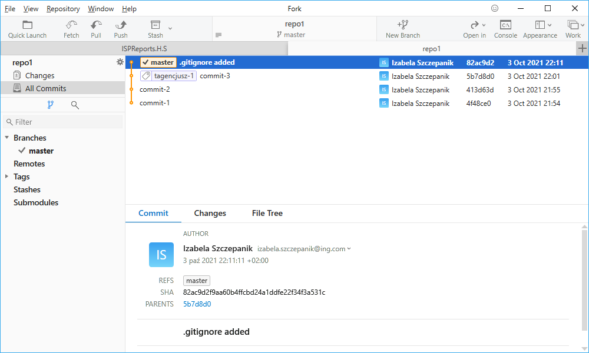

Pracujesz nad projektem w środowisku, które tworzy foldery i pliki, które nie powinny być widoczne dla gita.
Użyj repozytorium z poprzedniego ćwiczenia.
Utwórz pliki: today.log, yesterday.log oraz foldery bin i debug. Utwórz w tych folderach dowolne pliki.
$ git status
Sprawdź czy git wylistuje te pliki i foldery.
Utwórz plik .gitignore i wprowadź odpowiednie wpisy, żeby git ignorował foldery:
debug i bin
oraz pliki z rozszerzeniami: .log
oraz pliki z rozszerzeniami: .log
$ git status
Następnie sprawdź czy są poprawnie ignorowane. Wystarczy polecenie status. Jeśli git nie wylistuje niechcianych plików, jest dobrze.
Zacommituj teraz te zmiany, czyli dodany nowy plik .gitignore. Już wiesz jak :) Nazwij commit .gitignore added.
Zrób zmiany teraz w ignorowanych plikach i/lub folderach, zobacz czy git status je pokaże.
$ git status
$ git log --graph --oneline
$ git log --graph --oneline
Sprawdź status i log. Podejrzyj jak to wygląda w GUI
